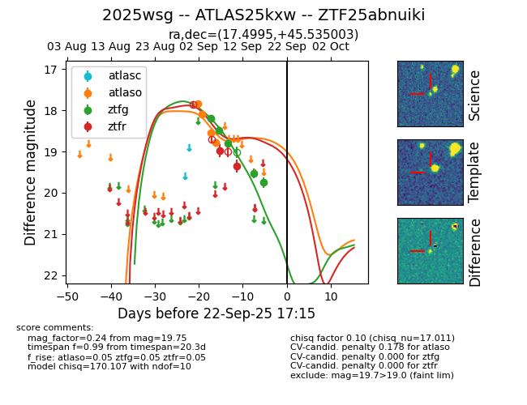
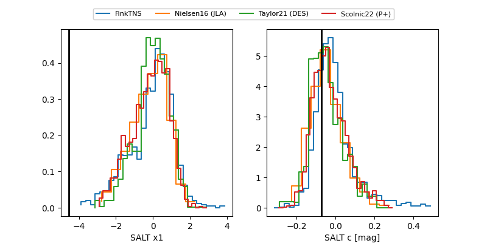

FINK: ZTF25abnuiki
Lasair: ZTF25abnuiki
ALeRCE: ZTF25abnuiki
TNS: 2025wsg
YSE: 2025wsg
ZTF25abnuiki (ztf,fink)
2025wsg (tns,yse)
ATLAS25kxw (atlas)
equatorial (ra, dec) = (17.4995,+45.53500)
galactic (l, b) = (126.3328,-17.21415)


last atlaso=18.78, ztfg=19.75, ztfr=19.35
4 atlaso, 5 ztfg, 2 ztfr detections